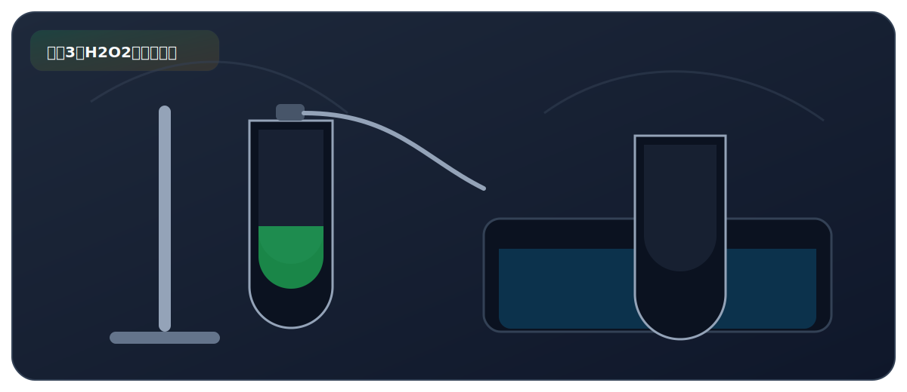

实验三、分解过氧化氢制取氧气

来自 PDF《化学实验基础知识及课本实验总结》的整理。建议：先读"实验原理"，再背"操作顺序"，最后用"误差分析/注意事项"拿分。
实验目标
- 理解“催化分解 H2O2 制氧气”，会写出检验/验满方法与注意事项。
必背方程式
- 2H2O2 MnO2===== 2H2O + O2↑
核心原理
- MnO2 为催化剂：加快反应速率，自身质量和化学性质不变。
- O2 不易溶于水，可排水法收集；也可向上排空气法收集。
关键步骤（怎么做）
- 在锥形瓶中加入 MnO2，连接装置并检查气密性。
- 用分液漏斗（可控制速率）或长颈漏斗（下端需伸入液面以下形成液封）滴加 H2O2 溶液。
- 待连续均匀气泡后开始收集。停止滴加 H2O2 即可停止反应。
现象（看到什么）
- 锥形瓶中产生大量气泡。
- 用带火星的木条伸入集气瓶中，木条复燃，说明产生的气体是 O2。
高频考点（怎么拿分）
- 检验 O2：带火星木条伸入瓶中复燃；验满：带火星木条放在瓶口复燃。
- 如何证明 MnO2 是催化剂——两个实验：①称量反应前后 MnO2 质量不变（证明质量不变）；②反应停止后再加 H2O2 仍能快速产生气体（证明化学性质不变）。
- 长颈漏斗下端必须伸入液面以下：形成液封，防止气体从漏斗口逸出。这是装置改进题的高频考点。
- 与 KMnO4 制 O2 对比：H2O2 法不需加热（固液常温型），操作更简便安全。
安全提醒
- H2O2 有一定腐蚀性：避免接触皮肤，溅到用大量水冲洗。
PDF摘录（原文提取，供对照）
化学方程式
- 过氧化氢 性质 化学式为 H2O2（过氧化氢中的氧化合价为 ‒1 价），是一种蓝 色、有轻微刺激性气味的粘稠液体，能以任意比例与水互溶；
- 其水溶液俗称“双氧水”，常温下分解缓慢，产生的氧气较少。
- 催化剂为 MnO2。
- MnO2 可以加快 H2O2 的分解速率；而其本身的质量和化学性质 均为发生改变，是 H2O2 分解的催化剂，起催化作用。
- 催化剂 验证 MnO2 质量不变的方法：称量反应前后 MnO2 的质量。
- 验证 MnO2 化学性质不变的方法：反应停止后，重新加入 H2O2 溶液，仍能快速产生气体。
- 排水法：O2 不易溶于水，且不与水反应；
- 收集
- 向上排空气法：O2 的密度比空气大。